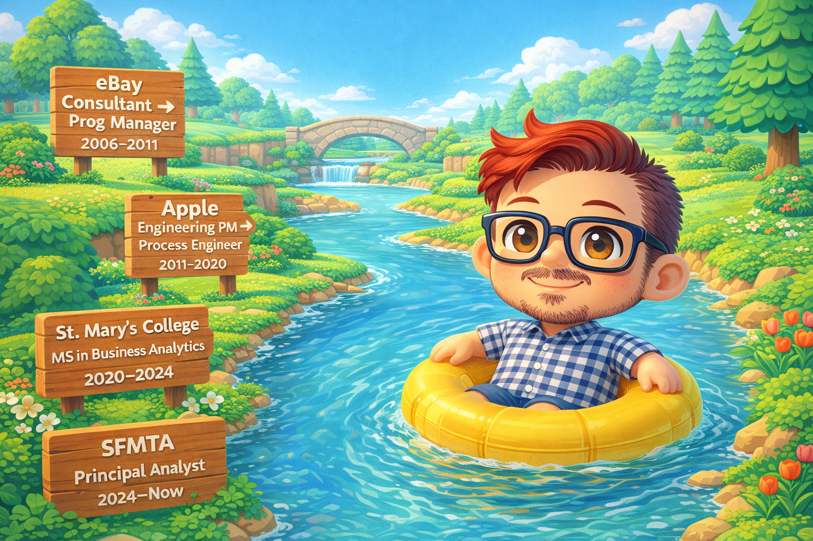

A Through-Line
the arc
Each role contributed something the next one required. Managing projects → solving org-wide problems → translating complexity at scale. Nothing wasted.
Case Studies
three in depthReducing Crashes for iTunes
Started with an incomprehensible spreadsheet and no process. Ended with a system that ran itself — and on-call engineers sleeping through the night.
Building iCloud's Outage Tracking from Scratch
iCloud launched to 300 million users with no system for tracking outages across its services. I built the whole thing — incident reporting, root cause identification, live dashboards, and the process that made it all run.
Kernel Updates for 500,000 Systems
An invisible process that held Apple's internal infrastructure together — except when it didn't. Rebuilt the way kernel and software updates rolled out across 500,000 systems and 40+ engineering groups. Identified the problems, redesigned the process, set the metrics, built the dashboard.
Notes, Essays & Side Quests
four lighter readseBay Site Security Program
Developed and led eBay Marketplaces' Site Security Program — improving security processes and leading cross-functional teams to protect the platform. Built a decision support system to identify highest-risk projects and focus security resources where they mattered most.
Making ML Explainable with SHAP
As more life-changing decisions get made by models designed to be incomprehensible, we must do better. A tutorial on translating machine learning outputs into something a human — or an executive — can actually act on.
Secret Gardens of San Francisco
Exploring and mapping the little-known public spaces hidden in downtown San Francisco. A love letter to the city — because understanding a place is its own kind of project management.
Conditional Probability for Normal Humans
If you test positive for malaria, how likely is it you actually have malaria? Many doctors get this wrong. An explanation without formulas — because making complex ideas accessible to decision-makers is the job.